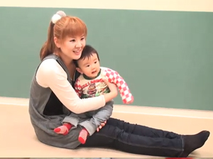
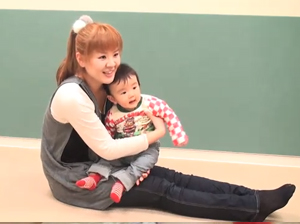

※ﾓﾊﾞｲﾙYouTubeを利用して動画をご覧いただけます｡
※ﾓﾊﾞｲﾙYouTubeは大量のﾊﾟｹｯﾄ通信をおこなうｱﾌﾟﾘｹｰｼｮﾝです｡携帯端末からYouTubeで動画を見る前に､ご契約の携帯電話のﾌﾟﾗﾝが｢ﾊﾟｹｯﾄ定額ｻｰﾋﾞｽ｣かどうかご確認ください｡
※ご利用の機種によっては動画が見られないことがあります｡
※音声つきです｡ﾏﾅｰﾓｰﾄﾞを解除してご覧ください｡
撮影/杉村燎一

|
｢おにぎり たべちゃうぞ｣の曲に合わせた遊び方 |
|
 |
|
10ｶ月号のCDに収録の｢おにぎり たべちゃうぞ｣で､からだ遊びをする読者ﾌｧﾐﾘｰの動画です｡自分なりに振り付けをｱﾚﾝｼﾞする参考にしましょう｡ ※ﾓﾊﾞｲﾙYouTubeを利用して動画をご覧いただけます｡ ※ﾓﾊﾞｲﾙYouTubeは大量のﾊﾟｹｯﾄ通信をおこなうｱﾌﾟﾘｹｰｼｮﾝです｡携帯端末からYouTubeで動画を見る前に､ご契約の携帯電話のﾌﾟﾗﾝが｢ﾊﾟｹｯﾄ定額ｻｰﾋﾞｽ｣かどうかご確認ください｡ ※ご利用の機種によっては動画が見られないことがあります｡ ※音声つきです｡ﾏﾅｰﾓｰﾄﾞを解除してご覧ください｡ 撮影/杉村燎一 |
| 動画を見る(約1分) |